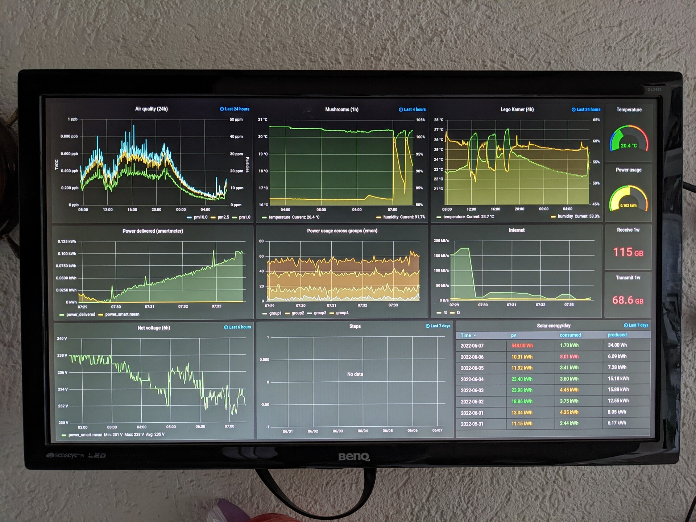
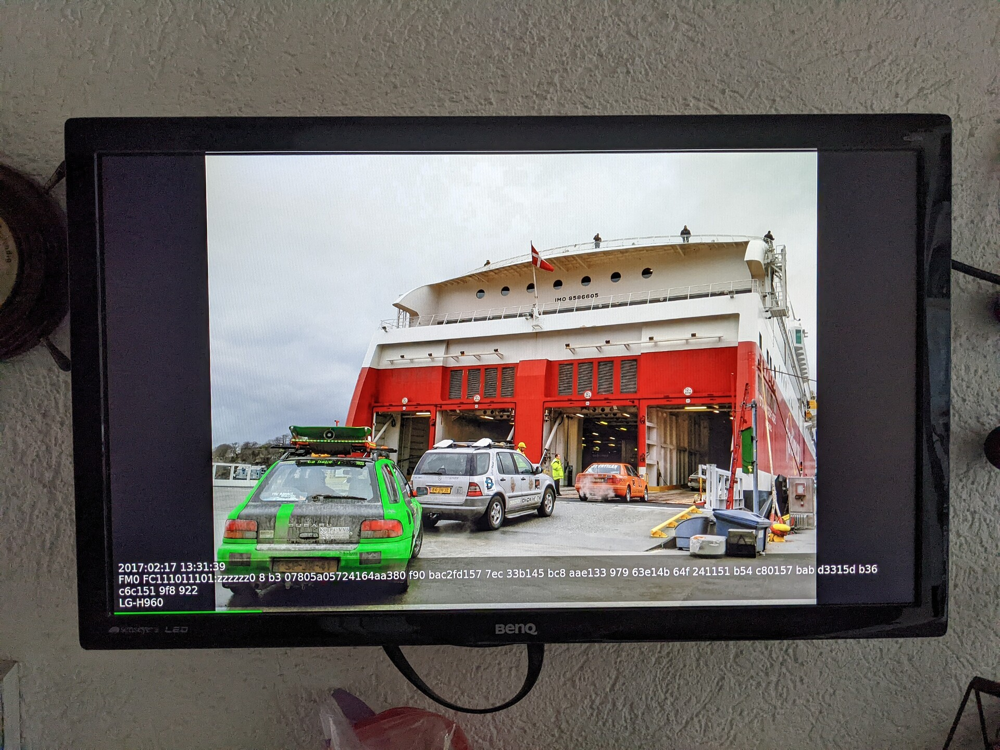
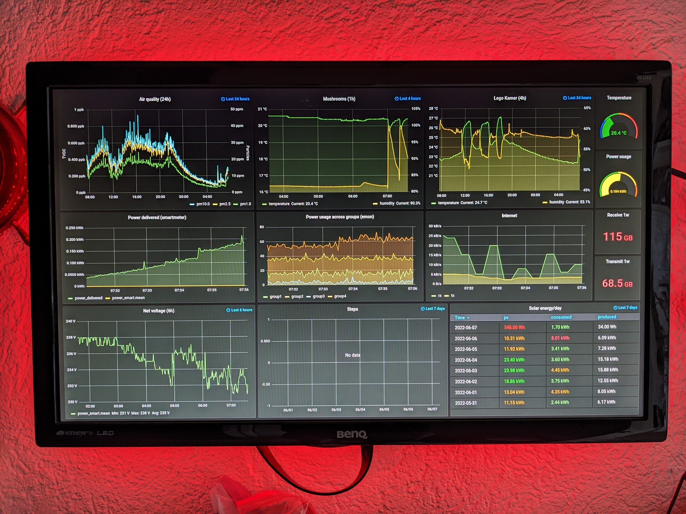
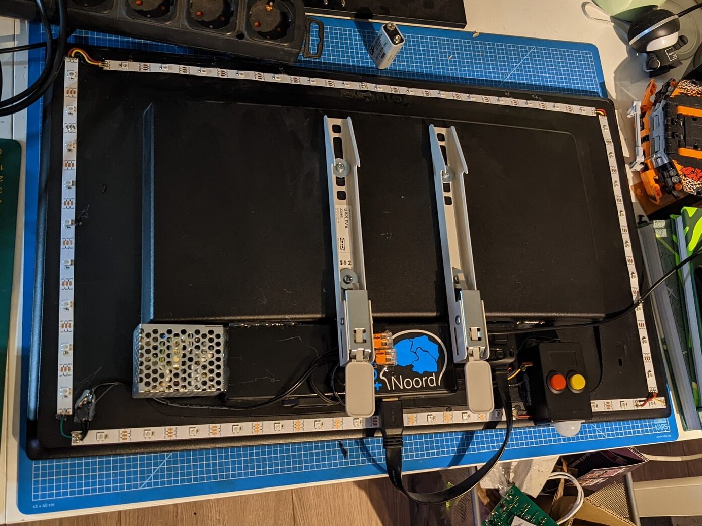
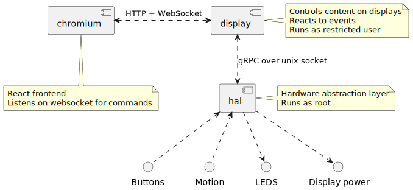

Building a kiosk using Go
Jos van Bakel
About me
- Nerd
- Electronics hobbyist
- System engineer at Spindle
- NixOS fanboy
Agenda
- What is a kiosk?
- How does it work?
- Why Go?
- Learnings
What is a kiosk?

What is a kiosk?

What is a kiosk?

What is a kiosk?

How does it work?

Why Go?
- Nice language: small syntax and typed
- Good libraries for GPIO and WS2812
- Cross compiles to
aarch64-linux - Good Nix support
gRPC
- gRPC Remote Procedure Calls
- Communication between
halanddisplay - Describe protocol in
protobuf - Generate client/server code for almost any language
- gRPC supports streams!
protobuf
service Hal {
rpc WatchEvents(google.protobuf.Empty) returns (stream Event) {}
// ...
}
message Event {
EventSource source = 1;
bool state = 2;
}
enum EventSource {
Pir = 0 [(name) = "pir"];
RedButton = 1 [(name) = "red_button"];
YellowButton = 2 [(name) = "yellow_button"];
}
Server
func (h *Hal) Run() {
addr, err := net.ResolveUnixAddr("unix", h.SocketPath)
lis, err := net.ListenUnix("unix", addr)
h.server = grpc.NewServer()
pb.RegisterHalServer(h.server, h)
h.server.Serve(lis)
}
func (h *Hal) WatchEvents(_ *emptypb.Empty, stream pb.Hal_WatchEventsServer) error {
h.addWatcher(stream)
<-stream.Context().Done()
h.removeWatcher(stream)
return nil
}
Publish event
gpiod.RequestLine(gpioDevice, pirPin,
gpiod.WithBothEdges,
gpiod.WithEventHandler(func(evt gpiod.LineEvent) {
event := pb.Event{
Source: pb.EventSource_Pir,
State: evt.Type == gpiod.LineEventRisingEdge,
}
for _, w := range h.watchers {
w.Send(&event)
}
}))
Client
conn, err := grpc.Dial(
d.config.HalSocketPath,
grpc.WithInsecure(),
grpc.WithDialer(func(addr string, timeout time.Duration) (net.Conn, error) {
return net.DialTimeout("unix", addr, timeout)
}))
defer conn.Close()
d.hal = pb.NewHalClient(conn)
// Watch events from HAL and process them.
stream, err := d.hal.WatchEvents(ctx, &emptypb.Empty{})
for {
event, err := stream.Recv()
// Handle event.
}
Go generate
//go:generate protoc --go_out=. --go_opt=paths=source_relative --go-grpc_out=. --go-grpc_opt=paths=source_relative hal_proto.proto
package hal_proto
go generate -x -v hal_proto/generate.go
Websocket server
r.GET("/ws", func(c *gin.Context) {
upgrader := websocket.Upgrader{}
conn, err := upgrader.Upgrade(c.Writer, c.Request, nil)
defer conn.Close()
d.addClient(conn)
for {
messageType, message, err := conn.ReadMessage()
if websocket.IsCloseError(err, websocket.CloseGoingAway, ...) {
break
}
// Handle message.
}
d.removeClient(conn)
})
Streaming files over HTTP
r.StaticFS("/video", http.Dir(d.config.VideosPath))
Streaming with http.ServeFile
r.GET("/video/:name", func(c *gin.Context) {
name := c.Param("name")
filepath := path.Join(d.config.VideosPath, name)
http.ServeFile(c.Writer, c.Request, filepath)
})
Embedded static frontend
- Run
esbuildbeforego build. - In the frontend directory there is one go file:
package frontend
import (
"embed"
)
//go:embed dist/**
var Assets embed.FS
Serve static files
fsys, err := fs.Sub(frontend.Assets, "dist")
r.NoRoute(func(c *gin.Context) {
c.FileFromFS(c.Request.URL.Path, http.FS(fsys))
})
Nix(OS)

Nix package
buildGoModule rec {
name = "neon-display";
version = "0.0.1";
src = ../..;
vendorSha256 = "sha256-WqdXu2yO...";
propagatedBuildInputs = [ rpi_ws281x ];
subPackages = [ "cmd/hal" "cmd/display" ];
NIX_CFLAGS_COMPILE = "-I${rpi_ws281x}/include/ws2811";
NIX_LDFLAGS_COMPILE = "-L${rpi_ws281x}/lib";
preBuild = ''
cp -r ${neon-display-frontend} frontend/dist
'';
}
NixOS module
services.neon-display = {
enable = true;
user = "display";
group = "users";
settings = {
web_bind = "0.0.0.0";
photos_path = "/nas/Pics/Photos";
off_timeout = 120; # seconds
sites = [
{
title = "Live";
url = "http://mon.home.lan/...";
}
];
};
};
Deployment
nix build .#images.neon
nixos-rebuild --flake '.#neon' switch \
--target-host root@neon --build-host localhost \
--use-remote-sudo -L
Questions?
- https://github.com/c0deaddict/neon-display
- mail: jos@codeaddict.org
- matrix: @jos:codeaddict.org